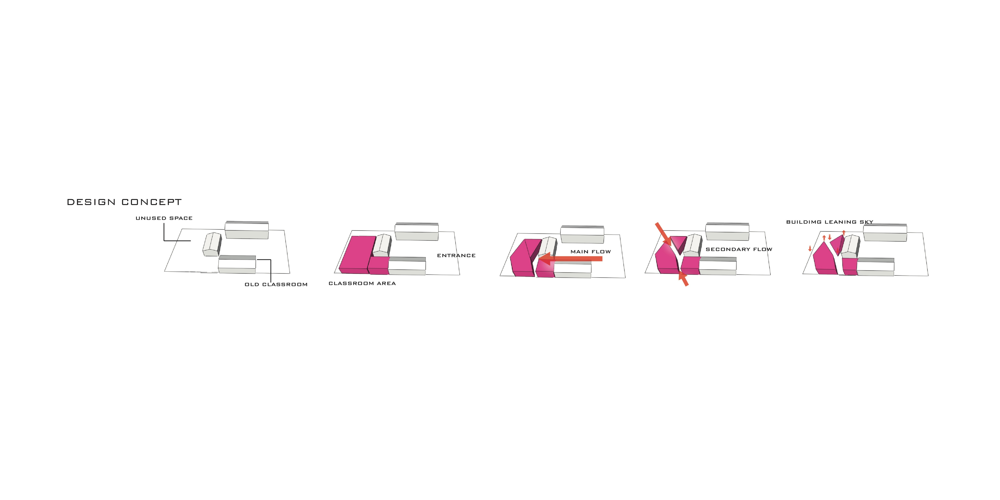
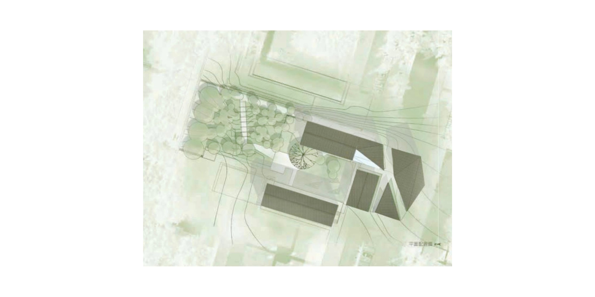
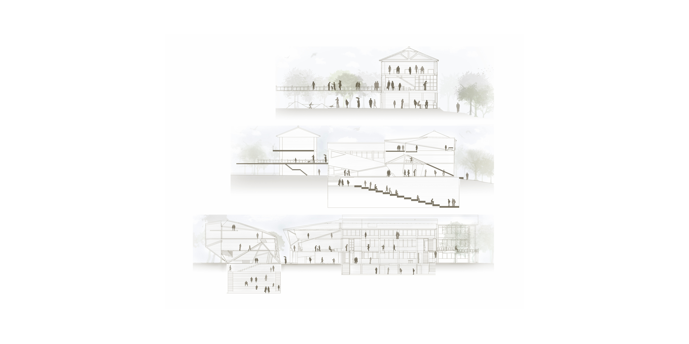
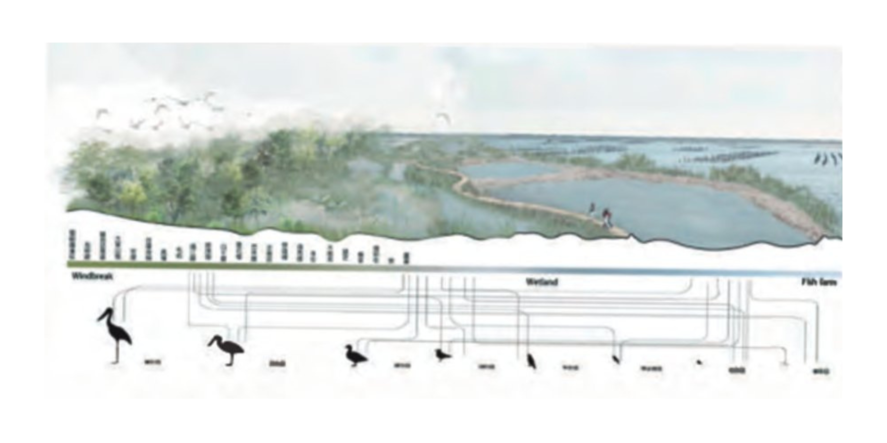

Born in Taiwan, 1991
Graduate of Tunghai University
Department of Landscape Architecture
台湾でランドスケープデザインを専攻し、設計事務所にて2年間の実務経験を積んできました。現在は日本にて、建築・内装設計分野においてCADオペレーターとして勤務し、その後BIM業務にも携わっています。
ランドスケープデザインの視点を活かしながら、設計意図を正確に図面・モデルへ反映し、表現力と作図精度の向上に取り組んでいます。
CAD / BIM / Modeling
AutoCAD ・ Vectorworks ・ Archicad ・ Rhinoceros ・ SketchUp ・ Artlantis ・ Lumion
Adobe
Photoshop ・ Illustrator ・ InDesign
Design
ランドスケープデザイン ・ コンセプト設計 ・ リサーチ・分析 ・ 図面作成 ・ プレゼンテーション制作